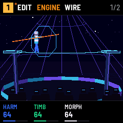
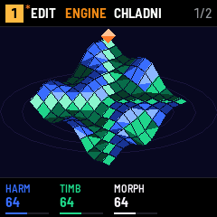

Physical: WIRE, CHLADNI
The physical family models a struck or plucked object and lets it ring: strings, marimbas, bells, metal. Both models make their own envelope: ENV's ADSR then shapes only the filter, and MORPH sets how long the object rings (ENGINE has no DECAY on them).
The values below were measured on the note C3 with the two other knobs at 64. A change below 300 Hz is clear on headphones and faint on the FM-1's speaker.


WIRE has an acrobat on a laser rope that hops and plucks the rope on each note: HARM sets the rope's stiffness, TIMB its brightness and MORPH its damping. CHLADNI draws a Chladni figure of the body's modes: HARM picks the mode, TIMB the strike's force and MORPH its damping.
WIRE
Sound. A plucked string, from a clean guitar-like pluck to a stiff, inharmonic wire that sounds like metal.
| Knob | At 0 | Middle | At 127 |
|---|---|---|---|
| HARM, inharmonicity | A harmonic string | Stiffer | Inharmonic: metallic |
| TIMB, the brightness | Dark: most of the energy below 150 Hz, quiet | Brighter | Bright: around 600 Hz–2.4 kHz, louder |
| MORPH, the decay | Short and dark | — | Long and bright |
Start with TIMB at 100: lower, the pluck is dark and quiet.
Recipes
| Sound | Settings |
|---|---|
| Plucked bass | Low notes, HARM 0, TIMB 100, MORPH 30 |
| Metal bell | Notes around C4, HARM 127, TIMB 100, MORPH 110: spread from 600 Hz to above 4.8 kHz |
CHLADNI
Sound. A struck resonant body: marimba, vibraphone, bells, metal plates. HARM picks the material, from wood to metal.
| Knob | At 0 | Middle | At 127 |
|---|---|---|---|
| HARM, the material | Wood: most of the energy around 1 kHz | Between | Metal: brighter, up to 4.8 kHz |
| TIMB, the strike's brightness | Soft mallet: low | Harder | A hard strike: bright, around 1.2–4.8 kHz |
| MORPH, the decay | Short: quiet | — | Long: rings, louder |
Start with HARM at 0 for wood, then raise it.
Recipes
| Sound | Settings |
|---|---|
| Marimba | Notes around C4, HARM 0, TIMB 40, MORPH 30 |
| Bell | Notes around C4, HARM 127, TIMB 127, MORPH 127: most of the energy above 2.4 kHz |
Inspired by Plaits by Mutable Instruments, whose inharmonic string and modal resonator models these are; CHLADNI's scene after Chladni figures.